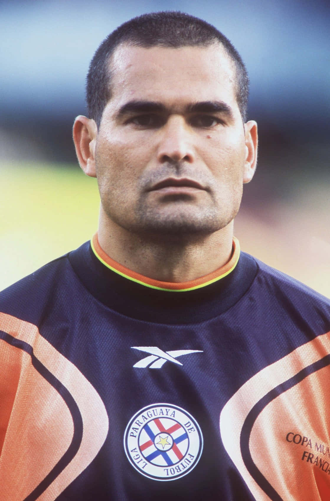
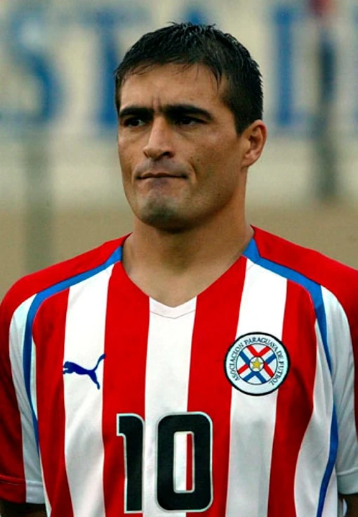
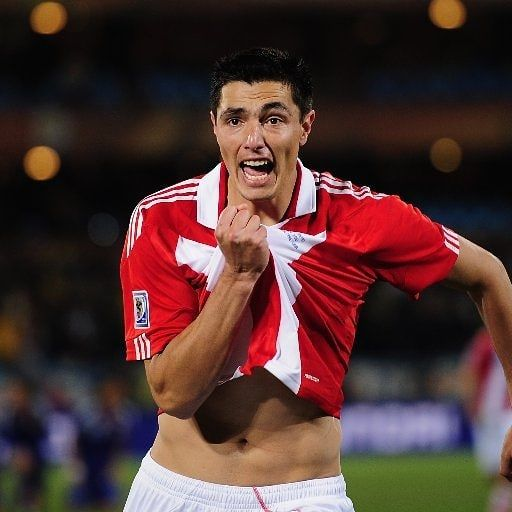
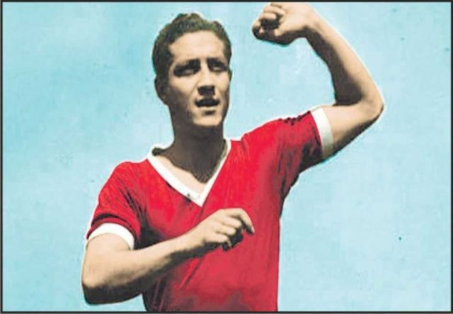
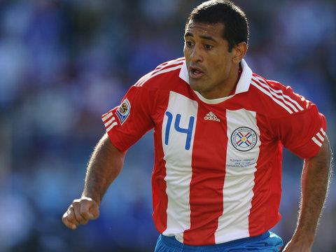
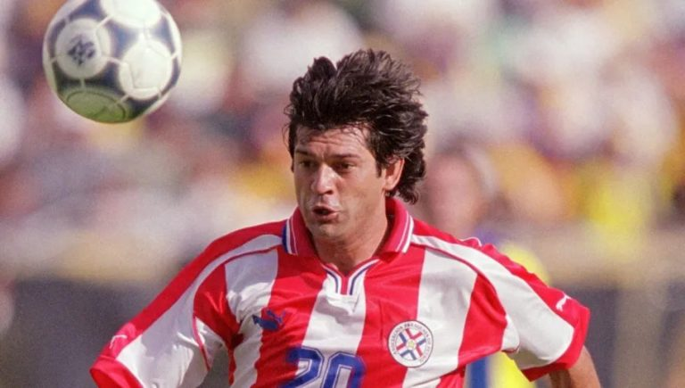
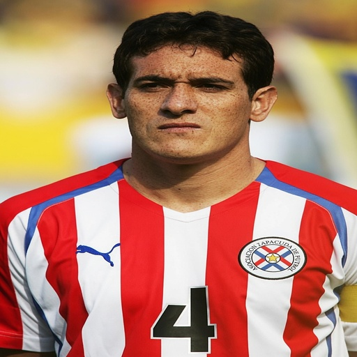

Selección de Fútbol
La Albirroja
Historia, pasión y glorias de Paraguay en el mundo
Descubrí la historiaUna historia de orgullo
La Selección Paraguaya de Fútbol es uno de los equipos más apasionantes de América del Sur. Con una historia marcada por actuaciones épicas, penales legendarios y jugadores que escribieron páginas doradas en el fútbol mundial.
Leyendas de la Albirroja
Los jugadores que marcaron una época y dejaron huella en el fútbol mundial.

José Luis Chilavert
Arquero / 1989–2003
Portero goleador, ídolo máximo y capitán histórico. Marcó más de 60 goles en su carrera y fue elegido el mejor arquero del mundo tres veces.
Roque Santa Cruz
Delantero / 1999–2026
El goleador histórico de la Albirroja. Marcó en el Mundial 2010 y fue pieza clave en el histórico paso a cuartos de final.

Roberto Acuña
Mediocampista / 1995–2010
Motor del mediocampo paraguayo durante más de una década. Participó en tres mundiales con la selección.

Salvador Cabañas
Delantero / 2002–2010
Veloz y desequilibrante, fue una de las grandes promesas truncadas del fútbol paraguayo y del continente.

Francisco Arce
Lateral / 1990–2006
Lateral izquierdo de clase internacional, participó en cuatro Copas del Mundo con Paraguay. Reconocido por su técnica y visión de juego.

Julio César Romero
Mediocampista / 1979–1989
Apodado "Romerito", fue el primer gran ídolo global del fútbol paraguayo. Brilló en Fluminense y fue considerado uno de los mejores de su generación en Sudamérica.

Óscar Cardozo
Delantero / 2005–2026
Leyenda viva y el máximo goleador paraguayo de la historia en el fútbol profesional. Ídolo absoluto del Benfica europeo y dueño de un zurdazo temible, mantiene una vigencia goleadora envidiable en el fútbol local.

Arsenio Erico
Delantero / 1930–1940
El mayor goleador de la historia del fútbol argentino con 295 goles en Independiente. Considerado el mejor jugador paraguayo de todos los tiempos por muchos historiadores.

Paulo Da Silva
Defensor / 2000–2015
Capitán y pilar defensivo de la generación del Mundial 2010. Líder dentro y fuera del campo, fue sinónimo de solidez y compromiso con la Albirroja.

José Saturnino Cardozo
Delantero / 1992–2006
En la temporada 2002-03 marcó un total de 58 goles en toda la liga, sumando Apertura y Clausura junto a fases finales del torneo mexicano. Fue un referente ofensivo durante más de una década.

Carlos Gamarra
Defensor central / 1993–2010
Apodado "El Káiser", es considerado el mejor defensor central de la historia paraguaya. Elegante y contundente, jugó en el Inter de Milán y en grandes clubes de Brasil.
Momentos Icónicos
Los hitos que definen la historia de la Albirroja.
1953
Primera Copa América
Paraguay conquista su primer título continental en Lima, Perú, con una generación brillante que marcó el inicio de la era dorada.
1979
Segunda Copa América
Con sede en Paraguay, la Albirroja gana su segundo título continental ante su gente. Una noche que el país jamás olvidará.
1998
Mundial Francia — Octavos de Final
Chilavert lidera a Paraguay hasta octavos de final. La caída ante Francia con gol de oro fue dolorosa pero digna.
2010
¡Cuartos de Final en Sudáfrica! 🏆
El logro más grande de la historia paraguaya. Tras eliminar a Japón y alcanzar cuartos, Paraguay cayó ante España — el eventual campeón — en un partido vibrante. Óscar Cardozo, arquero Villar y todo un equipo de héroes.
2011
Final de la Copa América
Paraguay llega a la final de la Copa América Argentina 2011. Aunque pierde ante Uruguay en penales, consolida su lugar entre los grandes del continente.
2014
Ausencia en Brasil — El inicio del desierto
Paraguay no clasifica al Mundial de Brasil 2014, comenzando una sequía mundialista que se extendería por 16 años y marcaría una época oscura para la Albirroja.
2025
¡De vuelta al Mundial! 🌎
El 5 de septiembre de 2025, con un empate ante Ecuador en Asunción, Paraguay selló oficialmente su clasificación al Mundial 2026. Las lágrimas de Alfaro en el área técnica lo dijeron todo. Después de 16 años, tres mundiales perdidos y noches de angustia, la Albirroja regresa a la Copa del Mundo que se disputará en Estados Unidos, México y Canadá.